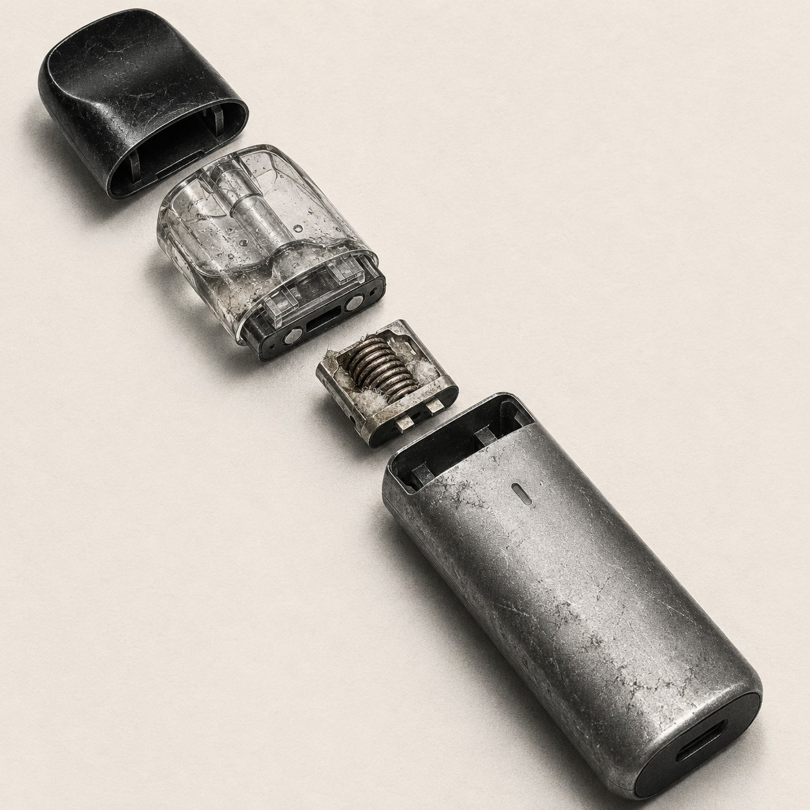
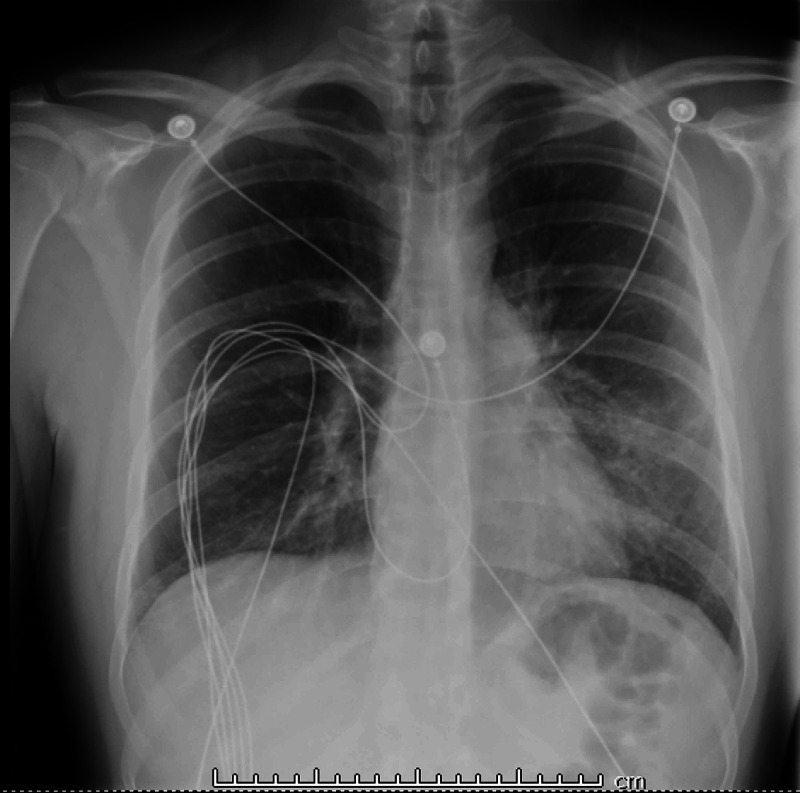

Cigarros eletrônicos
O que você
inala?
Do líquido à primeira tragada, acompanhe o caminho do aerossol e descubra o que ele pode levar aos pulmões.

Por dentro do vape
Toque em uma peça para ver o que acontece quando você traga.
Reservatório
O líquido pode conter glicerina, propilenoglicol, aromatizantes e nicotina. A composição varia de um produto para outro.
O que pode mudar no corpo?
- Pulmões
- Partículas finas podem alcançar regiões profundas e irritar as vias respiratórias.
- Coração
- A nicotina pode acelerar os batimentos e elevar a pressão arterial.
- Cérebro e dependência
- Na adolescência, a nicotina pode prejudicar a atenção e a aprendizagem. Com o uso repetido, o cérebro se adapta. Na falta dela, podem surgir irritabilidade e vontade intensa de usar outra vez.
O que o anúncio omite?
Anúncio fictício“Já provou o sabor do momento?”
O que dá para saber sobre a nicotina só olhando esse post?
Sobre publicidade, curiosidade e influência dos colegas: CDC

Um caso real
Sete dias na UTI.
Este é o exame de um estudante de 23 anos que teve uma lesão pulmonar associada ao uso de vape. Durante a internação, ele precisou de oxigênio de alto fluxo.
Imagem de Adhikari et al., Cureus (2021), figura 1. Ler o relato clínico · CC BY 3.0
E se acontecer comigo?
Escolha a situação que você quer conversar sobre.
Me ofereceram um vape
Você pode recusar com um “vou passar” e continuar a conversa. Se insistirem, procure um colega que respeite sua escolha. Você decide se quer explicar o motivo.
Quero ajudar um amigo
Pergunte como ele se sente e que tipo de ajuda gostaria de receber. Se quiser parar, ofereça companhia para conversar com um adulto de confiança ou procurar a unidade básica de saúde (UBS).
Quero ajuda para parar
Escolha alguém de confiança para contar que quer parar. Na UBS, diga que usa cigarro eletrônico e peça orientação à equipe sobre o apoio disponível. Se já tentou antes, conte o que foi mais difícil.
Consultar as orientações do Ministério da SaúdeFontes: CDC · Ministério da Saúde